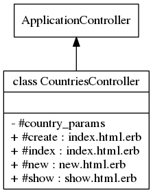

Class: CountriesController
- Inherits:
-
ApplicationController
- Object
- ActionController::Base
- ApplicationController
- CountriesController
- Defined in:
- app/controllers/countries_controller.rb
Overview
Handles Country model as defined by for the WorldBank
database.
Only writable by users with admin role. Readable by
anyone but with limitation (visible=Y) for not logged users.
This
controller support full localization (routes, fields and data).

Instance Method Summary collapse
-
#country_params ⇒ Object
private
Use callbacks to share common setup or constraints between actions.
-
#create ⇒ index.html.erb, new.html.erb
Fetch the country from WorldBank and save the new country in the database.
-
#index ⇒ index.html.erb
Displays countries list with bootstrap table sortable format and filtered by ability and language.
-
#new ⇒ new.html.erb
Asks for new country (country code and language).
-
#show ⇒ show.html.erb
Displays the country.
Methods inherited from ApplicationController
#configure_permitted_parameters, #default_url_options, #extract_locale_from_accept_language_header, #set_locale
Instance Method Details
#country_params ⇒ Object (private)
Use callbacks to share common setup or constraints between actions. Never trust parameters from the scary internet, only allow the white list through.
59 60 61 |
# File 'app/controllers/countries_controller.rb', line 59 def country_params params.require(:country).permit(:id1) end |
#create ⇒ index.html.erb, new.html.erb
Fetch the country from WorldBank and save the new country in the database. Error messages are rescued to flash notices.
21 22 23 24 25 26 27 28 29 30 31 32 33 34 35 36 37 38 39 40 |
# File 'app/controllers/countries_controller.rb', line 21 def create @country = Country.new(country_params) @id1 = params[:country][:id1] @language = params[:country][:language] begin # get worldbank data @results = WorldBank::Country.find(@id1).language(@language).fetch #get WorldBank country by id and language @country.id1 = @results.raw["id"] @country.name = @results.raw["name"] @country.iso2code = @results.raw["iso2Code"] @country.code = @results.raw["id"] @country.type = "Pays" if @language == 'fr' @country.type = "Country" if @language == 'en' @country.language = @language @country.save rescue Exception => e flash[:notice] = "Error creating country" redirect_to new_country_path and return end render plain: @country.inspect end |
#index ⇒ index.html.erb
Displays countries list with bootstrap table sortable format and filtered by ability and language. List is filtered by language and by ability
46 47 48 |
# File 'app/controllers/countries_controller.rb', line 46 def index @country = Country.accessible_by(current_ability).where(language: I18n.locale).order(:type , :name).all end |
#new ⇒ new.html.erb
Asks for new country (country code and language)
14 15 16 |
# File 'app/controllers/countries_controller.rb', line 14 def new @country = Country.new end |
#show ⇒ show.html.erb
Displays the country
53 54 55 |
# File 'app/controllers/countries_controller.rb', line 53 def show @country = Country.find(params[:id]) end |